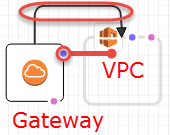

캔버스 창
Designer에서 캔버스 창에 템플릿 리소스가 다이어그램으로 표시됩니다. 이 창에서는 다이어그램의 레이아웃을 수정하고, 리소스를 추가 또는 제거하고, 리소스 간의 연결을 추가 또는 제거할 수 있습니다. 예를 들어, 리소스 유형 창에서 캔버스 창으로 Auto Scaling 그룹 및 시작 구성을 추가할 수 있습니다. 이러한 관련 리소스를 연결하려면 리소스 사이에 연결을 끌어 놓습니다.
Designer는 리소스를 어떻게 모델링하나요?
리소스 유형 창에서 캔버스 창으로 리소스를 끌면 Designer에서는 이러한 리소스를 컨테이너 또는 사각형 객체로 모델링합니다.
- 컨테이너
-
컨테이너 리소스는 다른 리소스를 포함할 수 있고, 크기를 조정할 수 있는 직사각형입니다. 예를 들어, Designer에서는
AWS::EC2::VPC리소스 유형을 컨테이너로 모델링합니다. 서브넷과 같은 리소스를 VPC로 끌 수 있습니다.컨테이너 리소스

- 사각형 객체
-
사각형 객체 리소스를 크기를 조정할 수 없고 다른 리소스를 포함할 수 없습니다. 예를 들어, Designer에서는
AWS::EC2::Instance리소스 유형을 사각형 객체로 모델링합니다.사각형 객체

리소스 연결
리소스를 연결해 관련 리소스 간에 연결을 생성할 수 있습니다. 예를 들어 캔버스 창에 인터넷 게이트웨이 및 VPC를 추가하면 둘 사이에는 아무런 관계가 없습니다. 게이트웨이를 VPC에 연결하려면 이 둘을 연결해야 합니다. 리소스 연결 방법은 리소스 유형과 Designer에서 리소스를 모델링하는 방법에 따라 다릅니다. 다음 설명 및 그림에 각 방법이 나와 있습니다.
- 컨테이너에 리소스 추가
-
유효한 리소스를 컨테이너로 끌면 Designer에서는 리소스와 컨테이너 간에 연결을 자동으로 생성합니다. 예를 들어, VPC가 컨테이너 리소스인데, 서브넷을 VPC로 끌면 Designer에서는 두 리소스 간에 연결을 자동으로 생성합니다.

다음 예에서처럼 이러한 연결은 템플릿에
Ref내장 함수로 표시됩니다.JSON
"PublicSubnet": { "Type": "AWS::EC2::Subnet", "Properties": { "VpcId": { "Ref": "VPC" }, "CidrBlock": "10.0.0.0/24" }YAML
PublicSubnet: Type: 'AWS::EC2::Subnet' Properties: VpcId: !Ref VPC CidrBlock: 10.0.0.0/24리소스를 컨테이너에 끌어 놓아도 연결이 생성되지 않는 경우가 있는데, 연결을 생성하려면 리소스 사이의 연결을 끌어야 합니다(리소스 사이의 연결 끌기에 대한 자세한 내용은 다음 방법 참조). Designer가 리소스를 연결하는지 확인하려면 통합 JSON 및 YAML 편집기를 사용하여 리소스 하나에서 다른 리소스에 대한
Ref를 찾습니다. 예를 들어, 서브넷 컨테이너에서 Auto Scaling 그룹을 추가하면 Designer에서는 해당 그룹의VPCZoneIdentifier(서브넷) 속성을 지정하지 않습니다. 이러한 두 리소스를 연결하려면 Auto Scaling 그룹에서 서브넷으로 연결을 끌어야 합니다. - 리소스 간에 연결 끌기
-
각 사각형 및 컨테이너 리소스의 모서리에는 연결을 생성할 수 있는 리소스를 나타내는 점이 하나 이상 있습니다. 연결을 생성하려면 점에서 해당하는 리소스 유형으로 커넥터 라인을 끕니다. 예를 들어, 인터넷 게이트웨이를 VPC에 연결하려면 VPC 게이트웨이 연결점에서 VPC의 아무 지점으로 선을 끕니다.
이러한 연결은 템플릿에
Ref내장 함수 또는 개별 리소스 유형으로 표시됩니다. 예를 들어 인터넷 게이트웨이를 VPC와 연결하면 Designer에서는 템플릿에AWS::EC2::VPCGatewayAttachment리소스 유형을 생성하여 두 리소스를 연결합니다. 이와 같은 리소스는 리소스 유형 창에 나열되지 않습니다.JSON
"VPCGatewayAttachment": { "Type": "AWS::EC2::VPCGatewayAttachment", "Properties": { "InternetGatewayId": { "Ref": "InternetGateway" }, "VpcId": { "Ref": "VPC" } }YAML
VPCGatewayAttachment: Type: 'AWS::EC2::VPCGatewayAttachment' Properties: InternetGatewayId: !Ref InternetGateway VpcId: !Ref VPC - 리소스 간에 연결 코딩
-
연결을 생성하기 위해 템플릿의 JSON 또는 YAML을 편집해야 하는 경우가 있습니다(예: 보안 그룹 두 개를 연결하는 경우). 연결을 생성하기 위해 JSON 또는 YAML을 편집해야 하는 경우에는 하드 코딩된 연결(파선 연결)을 생성합니다. 이러한 연결은 캔버스 창에서 생성하거나 편집할 수 없습니다.

일반적으로 리소스 속성 내에 참조(
Ref)가 포함되어 있으면 하드 코딩된 연결을 생성합니다. 예를 들어 보안 그룹 2개 사이의 연결을 정의할 수 있는데, 보안 그룹 하나에는 다른 보안 그룹에서의 트래픽을 허용하는 수신 규칙이 포함되어 있습니다. 다음WebServerSecurityGroup리소스에는PublicLoadBalancerSecurityGroup리소스를 참조하는 수신 규칙이 있습니다.JSON
"WebServerSecurityGroup": { "Type": "AWS::EC2::SecurityGroup", "Properties": { "VpcId": { "Ref": "VPC" }, "GroupDescription": "Allow access from HTTP and SSH traffic", "SecurityGroupIngress": [ { "IpProtocol": "tcp", "FromPort": 80, "ToPort": 80, "CidrIp": "0.0.0.0/0" }, { "IpProtocol": "tcp", "FromPort": 22, "ToPort": 22, "CidrIp": { "Ref": "SSHLocation" } } ] } ...YAML
WebServerSecurityGroup: Type: 'AWS::EC2::SecurityGroup' Properties: VpcId: !Ref VPC GroupDescription: Allow access from HTTP and SSH traffic SecurityGroupIngress: - IpProtocol: tcp FromPort: 80 ToPort: 80 CidrIp: 0.0.0.0/0 - IpProtocol: tcp FromPort: 22 ToPort: 22 CidrIp: !Ref SSHLocation
리소스 메뉴를 사용하여 일반 리소스 작업에 액세스
리소스 메뉴에서는 리소스 속성 편집, 리소스 복제, 리소스 삭제 또는 리소스에 대한 문서 보기 등과 같은 일반적인 리소스 작업에 쉽게 액세스할 수 있습니다. 리소스 메뉴를 보려면 캔버스 창에서 리소스를 마우스 오른쪽 버튼으로 클릭합니다. 문서 링크는 해당 리소스에 대한 속성 및 구문을 설명하는 템플릿 참조로 연결됩니다.
리소스 메뉴

명시적 종속성 정의
AWS CloudFormation에서 리소스를 생성 및 삭제하는 순서를 지정하기 위해 명시적 종속성을 생성할 수 있습니다. 명시적 종속 항목은 동시 리소스 생성 및 삭제를 재정의하는 데 유용합니다. AWS CloudFormation에서는 템플릿의 어떤 리소스를 동시에 처리할 수 있고, 처리할 수 없는지 자동으로 결정합니다. 동일한 템플릿 내에서 다른 소스의 속성을 참조하거나(Ref 내장 함수 사용) 다른 소스에서 속성을 가져오는(Fn::GetAtt 내장 함수 사용) 속성을 지정하면 이는 종속성을 암시하고 AWS CloudFormation에서는 올바른 순서로 이러한 종속성을 구축합니다.
그러나 경우에 따라 종속성을 명시적으로 정의해야 합니다. 예를 들어, 라우팅 규칙은 인터넷 게이트웨이가 VPC에 연결될 때까지 해당 게이트웨이를 사용할 수 없습니다. 일반적으로 AWS CloudFormation에서는 암시적 종속성으로 인해 인터넷 게이트웨이를 생성한 직후에 라우팅 규칙을 생성합니다. 그러나 인터넷 게이트웨이가 VPC에 연결되기 전에 AWS CloudFormation에서 라우팅 규칙을 생성할 수 있는데 이러한 경우 오류가 발생합니다. 따라서 게이트웨이-VPC 연결에 대한 종속성을 명시적으로 정의해야 합니다.
명시적 종속성을 생성하려면 경로에 있는 DependsOn(*) 점에서 게이트웨이-VPC 연결로 라인을 끕니다.

명시적 종속성을 생성해야 할 수 있는 경우에 대한 자세한 내용은 DependsOn 속성 단원을 참조하십시오.
JSON
JSON에서 이러한 명시적 종속성은 아래 예에서처럼 리소스에 대한 DependsOn 속성으로 표시됩니다.
"PublicRoute": { "Type": "AWS::EC2::Route", "DependsOn": "VPCGatewayAttachment", "Properties": { "DestinationCidrBlock": "0.0.0.0/0", "RouteTableId": { "Ref": "PublicRouteTable" }, "GatewayId": { "Ref": "InternetGateway" } }
YAML
YAML에서 이러한 명시적 종속성은 아래 예에서처럼 리소스에 대한 DependsOn 속성으로 표시됩니다.
PublicRoute: Type: 'AWS::EC2::Route' DependsOn: - VPCGatewayAttachment Properties: DestinationCidrBlock: 0.0.0.0/0 RouteTableId: !Ref PublicRouteTable GatewayId: !Ref InternetGateway